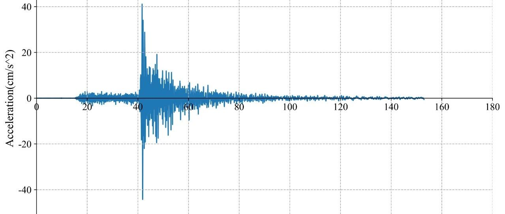

RED-ACT: 20190302日本北海道6.2级地震破坏力分析
RED-ACT Report
Real-time Earthquake Damage Assessment using City-scale Time-history analysis
2019-03-02 M6.2 日本北海道地震
清华大学陆新征课题组 ([email protected])
报告时间12:00, Mar. 2, 2019 (北京时间, UTC +8)
致谢和声明
感谢日本K-NET and KiK-net为本研究提供数据支持。本分析仅供科研使用，具体灾情和灾损分析应根据现场调查情况确定。
一、地震情况简介
据日本气象厅测定，当地时间3月2日12:23 (UTC +9)在日本北海道发生6.2级地震，震源深度10千米，震中位于北纬42.1度，东经146.8度。
二、强震记录及分析
本次地震共获取震中附近强震记录30条，台站名称及经纬度参见表1。记录到的最大地面运动加速度（PGA）为62 cm/s/s。该地震动与我国设计反应谱对比如图1所示。


图1 最大PGA强震记录及其反应谱
三、地震动对典型城市区域破坏能力分析
利用密布强震台网在震后获取的实时地震动信息，再结合城市抗震弹塑性分析（技术细节参见本报告附录），就可以得到地震发生后不同地点的建筑破坏情况，为抗震救灾决策提供科学支撑。图2为本次地震震中附近范围内台站记录分析得到的建筑震害分布示意图，图3为本次地震震中附近范围内台站记录分析得到的人员加速度感受分布示意图。图中蓝色云图为周围人口密度分布。

图2 不同台站地震记录破坏力分布图（建筑抗震承载力取均值）

图3 不同台站地震记录人员加速度感受分布图（建筑抗震承载力取均值）
更详细资料可参见
http://www.luxinzheng.net/software/2019-03-02-Japan-6.2.html
http://www.luxinzheng.net/software/2019-03-02-Japan-6.2-Acc.html
表1 强震台站名称和经纬度
No. 台站名称 纬度 经度
1 AOM010 141.142 40.8721
2 AOM012 141.481 40.5138
3 HKD063 145.248 44.106
4 HKD065 145.056 43.7938
5 HKD066 145.131 43.6619
6 HKD067 144.973 43.555
7 HKD068 144.77 43.4108
8 HKD069 145.117 43.3941
9 HKD070 145.284 43.3852
10 HKD071 145.26 43.2326
11 HKD072 145.521 43.1948
12 HKD073 145.6 43.3327
13 HKD074 145.803 43.368
14 HKD075 145.029 43.1309
15 HKD077 144.382 42.9845
16 HKD078 144.498 43.1486
17 HKD079 144.6 43.3033
18 HKD080 144.448 43.5077
19 HKD083 144.325 43.233
20 HKD084 144.123 43.1141
21 HKD085 144.07 42.9581
22 HKD089 143.554 43.2436
23 HKD092 143.448 42.9283
24 HKD097 143.421 42.6181
25 HKD099 142.839 43.0736
26 HKD100 143.312 42.2864
27 IWT012 141.138 39.3209
28 IWT020 141.329 39.7841
29 IWT021 141.082 39.9203
30 KGS011 130.349 31.5896
------End------
相关研究
长按识别二维码，关注我们的科研动态